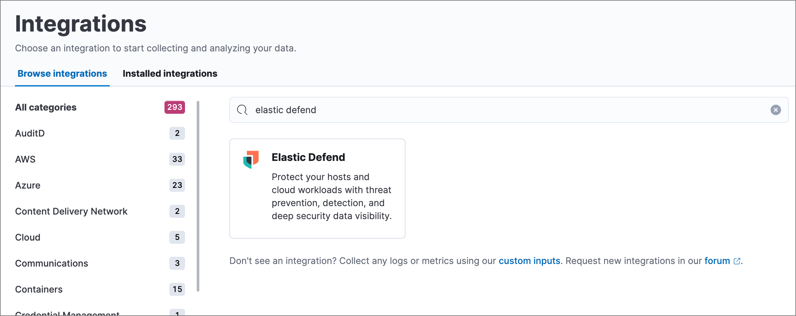
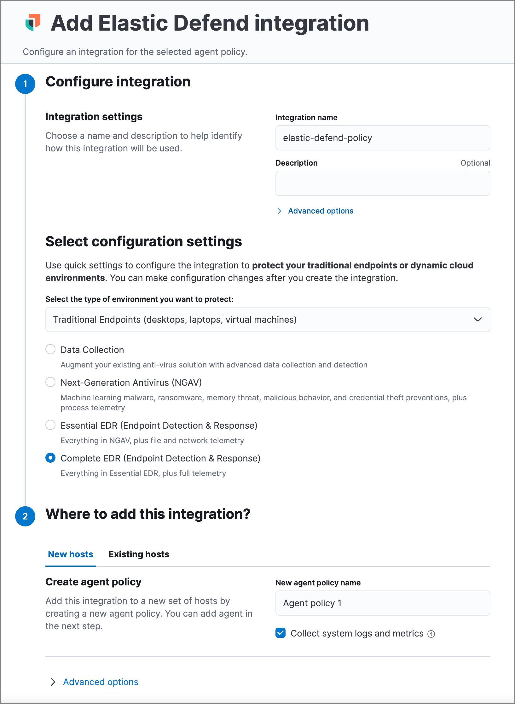
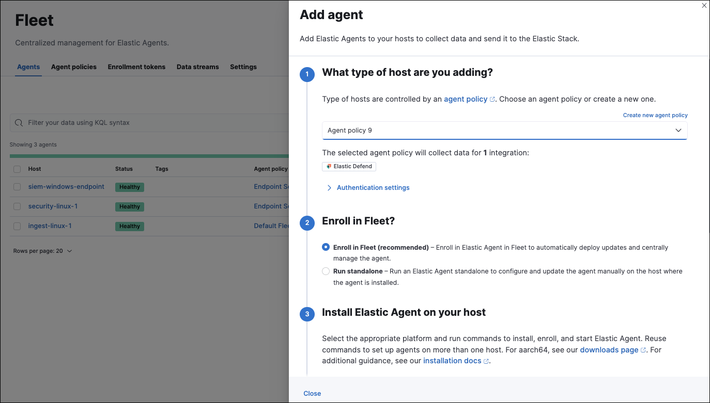
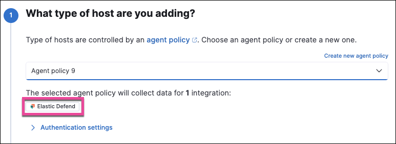

Install the Elastic Defend integration
editLike other Elastic integrations, Elastic Defend is integrated into the Elastic Agent using Fleet. Upon configuration, the integration allows the Elastic Agent to monitor events on your host and send data to the Elastic Security app.
Requirements
- Fleet is required for Elastic Defend.
- To configure the Elastic Defend integration on the Elastic Agent, you must have permission to use Fleet.
- You must have the appropriate user role to configure an integration policy and access the Endpoints page.
Before you begin
editIf you’re using macOS, some versions may require you to grant Full Disk Access to different kernels, system extensions, or files. Refer to Elastic Defend requirements for more information.
Elastic Defend does not support deployment within an Elastic Agent DaemonSet in Kubernetes.
Add the Elastic Defend integration
edit-
Go to the Integrations page, which you can access in several ways:
- The Add integrations link at the top of most pages
- Assets → Browse Integrations
-
Project settings → Integrations

-
Search for and select Elastic Defend, then select Add Elastic Defend. The integration configuration page appears.
If this is the first integration you’ve installed and the Ready to add your first integration? page appears instead, select Add integration only (skip agent installation) to proceed. You can install Elastic Agent after setting up the Elastic Defend integration.

- Configure the Elastic Defend integration with an Integration name and optional Description.
- Select the type of environment you want to protect, either Traditional Endpoints or Cloud Workloads.
-
Select a configuration preset. Each preset comes with different default settings for Elastic Agent — you can further customize these later by configuring the Elastic Defend integration policy.
Traditional Endpoint presets
All traditional endpoint presets except Data Collection have these preventions enabled by default: malware, ransomware, memory threat, malicious behavior, and credential theft. Each preset collects the following events:
- Data Collection: All events; no preventions
- Next-Generation Antivirus (NGAV): Process events; all preventions
- Essential EDR (Endpoint Detection & Response): Process, Network, File events; all preventions
- Complete EDR (Endpoint Detection & Response): All events; all preventions
Cloud Workloads presets
Both cloud workload presets are intended for monitoring cloud-based Linux hosts. Therefore, session data collection, which enriches process events, is enabled by default. They both have all preventions disabled by default, and collect process, network, and file events.
- All events: Includes data from automated sessions.
- Interactive only: Filters out data from non-interactive sessions by creating an event filter.
- Enter a name for the agent policy in New agent policy name. If other agent policies already exist, you can click the Existing hosts tab and select an existing policy instead. For more details on Elastic Agent configuration settings, refer to Elastic Agent policies.
- When you’re ready, click Save and continue.
- To complete the integration, select Add Elastic Agent to your hosts and continue to the next section to install the Elastic Agent on your hosts.
Configure and enroll the Elastic Agent
editTo enable the Elastic Defend integration, you must enroll agents in the relevant policy using Fleet.
Before you add an Elastic Agent, a Fleet Server must be running. Refer to Add a Fleet Server.
Elastic Defend cannot be integrated with an Elastic Agent in standalone mode.
Add the Elastic Agent
edit-
If you’re in the process of installing an Elastic Agent integration (such as Elastic Defend), the Add agent UI opens automatically. Otherwise, go to Assets → Fleet → Agents → Add agent.
 -
Select an agent policy for the Elastic Agent. You can select an existing policy, or select Create new agent policy to create a new one. For more details on Elastic Agent configuration settings, refer to Elastic Agent policies.
The selected agent policy should include the integration you want to install on the hosts covered by the agent policy (in this example, Elastic Defend).

- Ensure that the Enroll in Fleet option is selected. Elastic Defend cannot be integrated with Elastic Agent in standalone mode.
- Select the appropriate platform or operating system for the host, then copy the provided commands.
- On the host, open a command-line interface and navigate to the directory where you want to install Elastic Agent. Paste and run the commands from Fleet to download, extract, enroll, and start Elastic Agent.
- (Optional) Return to the Add agent flyout in Fleet, and observe the Confirm agent enrollment and Confirm incoming data steps automatically checking the host connection. It may take a few minutes for data to arrive in Elasticsearch.
-
After you have enrolled the Elastic Agent on your host, you can click View enrolled agents to access the list of agents enrolled in Fleet. Otherwise, select Close.
The host will now appear on the Endpoints page in the Elastic Security app. It may take another minute or two for endpoint data to appear in Elastic Security.
- For macOS, continue with these instructions to grant Elastic Endpoint the required permissions.